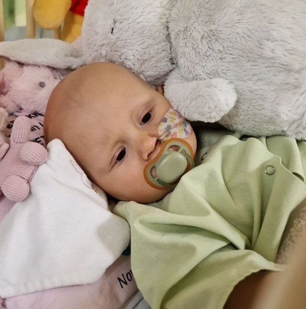

What is Neuroblastoma?
Neuroblastoma is a type of pediatric cancer that develops in the nervous system of babies and young children. Neuroblastoma grows in immature nerve tissue (neuroblasts). It usually affects neuroblasts in the adrenal glands (small organs that sit on top of the kidneys). The adrenal glands make hormones that control automatic body functions, such as digestion, blood pressure, breathing and heart rate. Neuroblastoma can also develop in nerve tissue in the spinal cord, abdomen, chest or neck. It can spread to other parts of the body.

Affliction rate
Neuroblastoma is the most common tumor in infants, and the
most common tumor in children under 1 year of age
In summary, neuroblastoma affects 2 in every 100 children.
Symptoms
Signs of neuroblastoma include;
Vomiting, diarrhea, weight loss, lump or swelling in the
abdomen, neck or chest, drooping eyelids or uneven pupis,
fever, pain in the bone etc.

Fatality Rate
The fatality rate of neuroblastoma is dependent on the
risk category
Low-risk neuroblastoma- 5%
Intermidiate-risk - 5-10%
High-risk - 40-60%
What we do
Kindercaring has a total commitment to support chidren with Neuroblastoma. Funds gotten through donations will be used to support children by covering the cost of hospital bills incured from chemotherapy, surgery, radiation therapy, immunotherapy and other forms of treatment.